Pather Panchali (1955)
A poignant tale of rural Bengal, following young Apu and his family’s struggles with poverty and dreams of a better life.
Actors: Kanu Bannerjee, Karuna Bannerjee, Subir Banerjee.
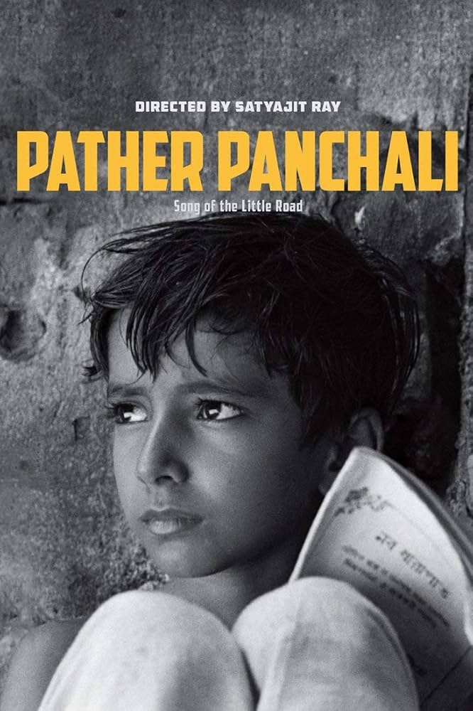
Aparajito (1956)
After his father’s death, Apu moves to Calcutta for studies, while his mother faces loneliness and hardship.
Actors: Pinaki Sengupta, Karuna Bannerjee, Smaran Ghosal.
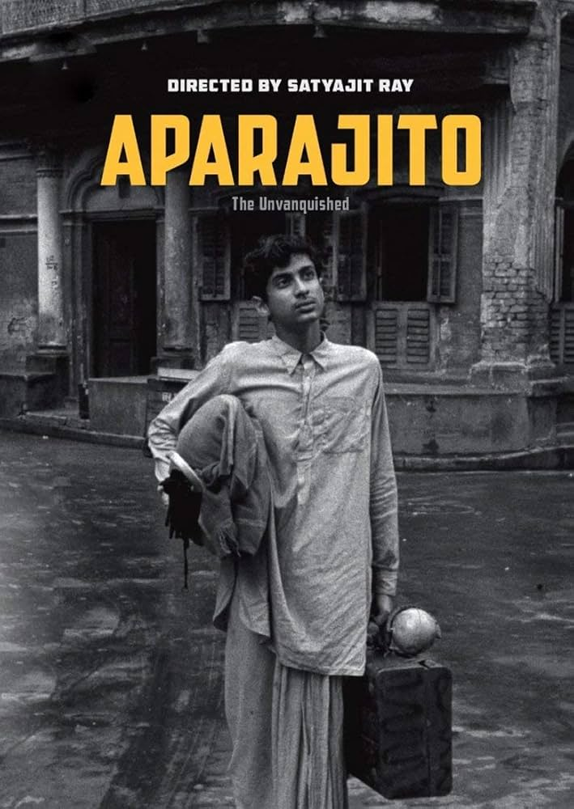
Parash Pathar (1958)
A clerk discovers a magical stone that turns objects into gold, leading to comic consequences.
Actors: Tulsi Chakraborty, Kali Banerjee.
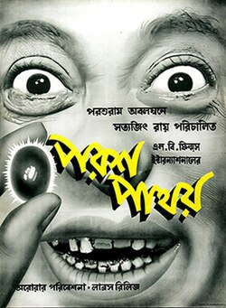
Jalsaghar (The Music Room, 1958)
A zamindar clings to his fading aristocratic lifestyle through music, symbolizing the decline of feudal Bengal.
Actors: Chhabi Biswas, Padma Devi.
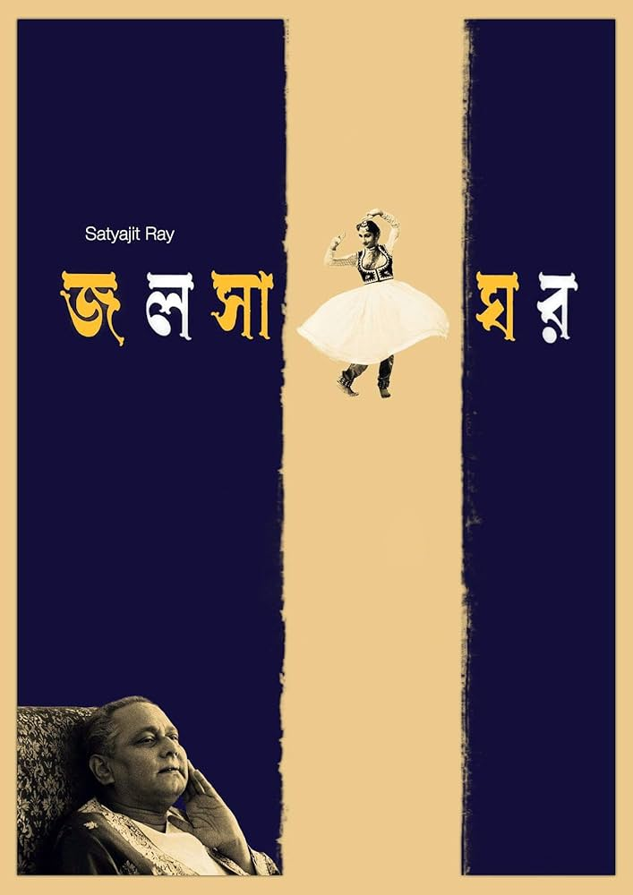
Apur Sansar (1959)
The final chapter of Apu’s journey, focusing on his marriage, tragedy, and eventual reconciliation with his son.
Actors: Soumitra Chatterjee, Sharmila Tagore.
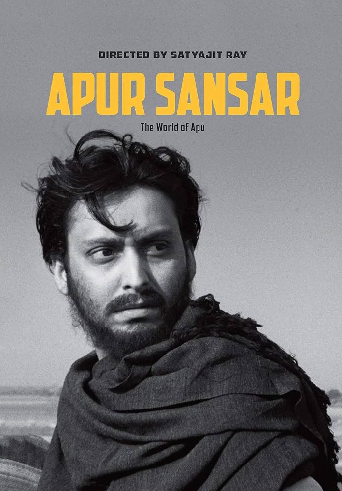
Devi (The Goddess, 1960)
A young woman is worshipped as a goddess, leading to tragic consequences for her family.
Actors: Sharmila Tagore, Soumitra Chatterjee.
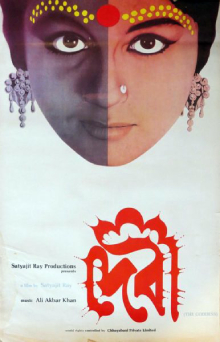
Teen Kanya (1961)
An anthology of three Tagore stories, each exploring women’s lives and choices.
Actors: Aparna Sen, Madhabi Mukherjee.
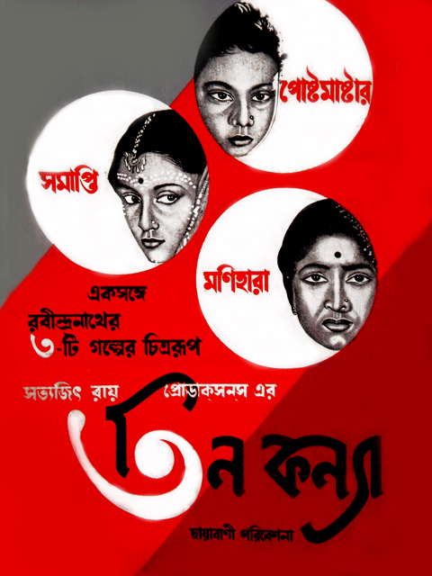
Kanchenjungha (1962)
During a holiday in Darjeeling, a wealthy family confronts generational conflicts and personal decisions.
Actors: Chhabi Biswas, Karuna Bannerjee.
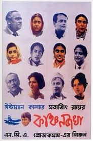
Abhijan (1962)
A proud taxi driver faces moral dilemmas and changing values in society.
Actors: Soumitra Chatterjee, Waheeda Rehman.
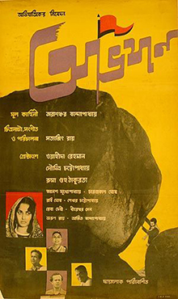
Mahanagar (The Big City, 1963)
A middle-class housewife takes up a job, challenging traditional gender roles in Calcutta.
Actors: Madhabi Mukherjee, Anil Chatterjee.
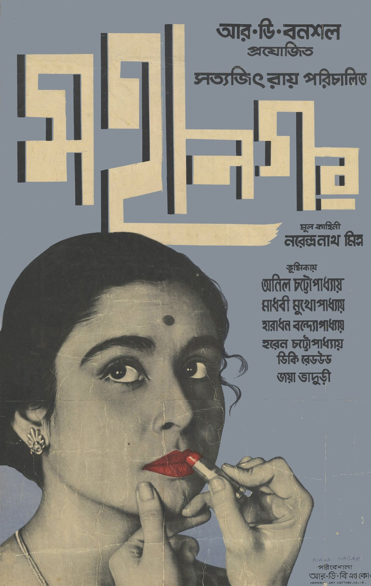
Charulata (The Lonely Wife, 1964)
A sensitive portrayal of a lonely woman’s emotional awakening and unfulfilled desires.
Actors: Madhabi Mukherjee, Soumitra Chatterjee.
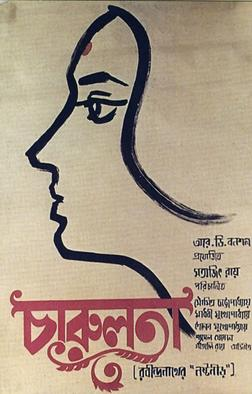
Nayak (The Hero, 1966)
A matinee idol reflects on his life and insecurities during a train journey.
Actors: Uttam Kumar, Sharmila Tagore.
Chiriyakhana (1967)
Detective Byomkesh Bakshi investigates a murder among eccentric residents of a colony.
Actors: Uttam Kumar.
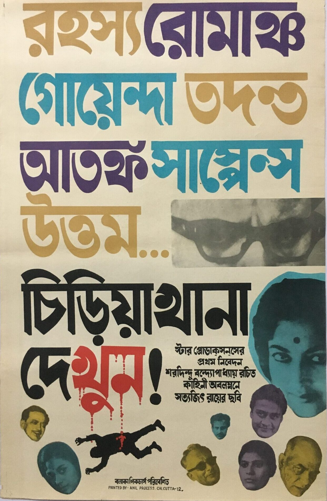
Goopy Gyne Bagha Byne (The Adventures of Goopy and Bagha, 1969)
A musical fantasy about two village simpletons who gain magical powers and confront a tyrant king.
Actors: Tapen Chatterjee, Rabi Ghosh.

Aranyer Din Ratri (Days and Nights in the Forest, 1970)
Four urban men vacation in the forest, confronting their own flaws and social realities.
Actors: Soumitra Chatterjee, Sharmila Tagore, Rabi Ghosh.
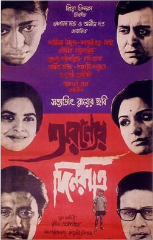
Pratidwandi (The Adversary, 1970)
A young graduate struggles with unemployment and disillusionment in politically turbulent Calcutta.
Actors: Dhritiman Chatterjee.
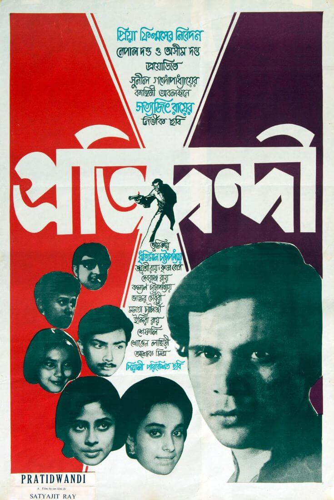
Seemabaddha (Company Limited, 1971)
A corporate executive compromises his morals to secure a promotion, exposing the ruthlessness of modern business culture.
Actors: Barun Chanda, Sharmila Tagore.
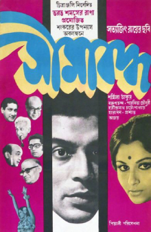
Ashani Sanket (Distant Thunder, 1973)
Set during the Bengal famine of 1943, it shows how hunger erodes human values and relationships in a rural community.
Actors: Soumitra Chatterjee, Sharmila Tagore.
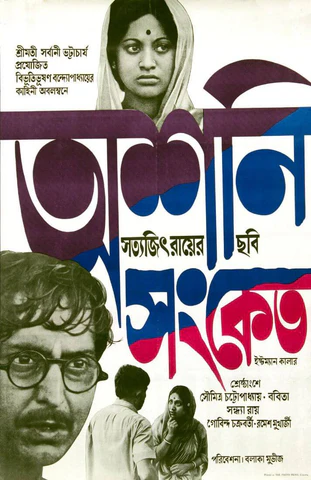
Sonar Kella (The Golden Fortress, 1974)
Detective Feluda investigates a boy’s visions of a golden fortress, leading to adventure in Rajasthan.
Actors: Soumitra Chatterjee, Santosh Dutta, Siddhartha Chatterjee.
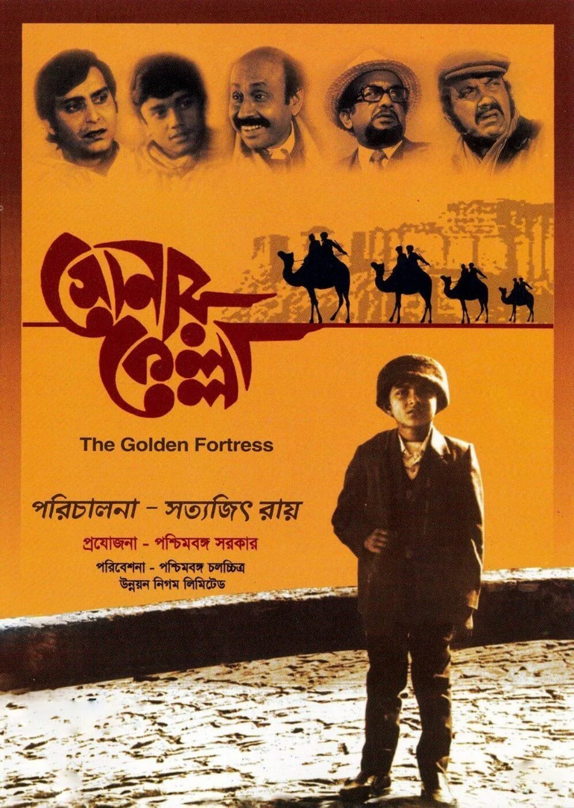
Jana Aranya (The Middleman, 1976)
A young man, unable to find respectable work, is drawn into the underworld of shady business deals.
Actors: Pradip Mukherjee, Lily Chakravarty.
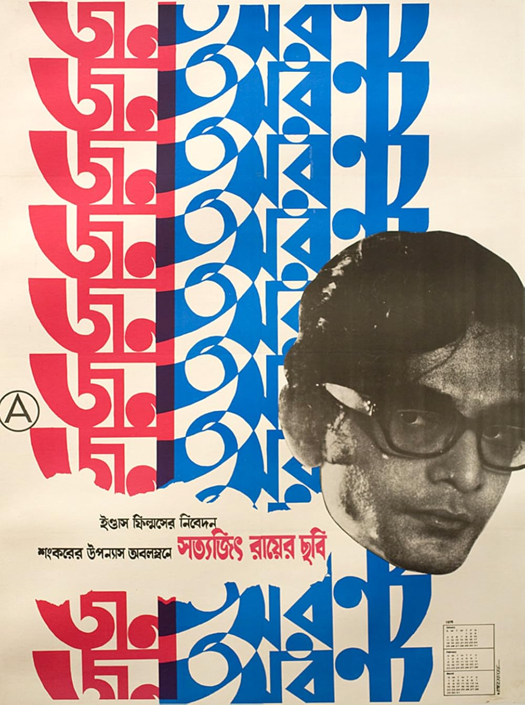
Shatranj Ke Khilari (The Chess Players, 1977)
Two noblemen obsessed with chess ignore the British annexation of their kingdom in 1856 Awadh.
Actors: Sanjeev Kumar, Saeed Jaffrey, Amjad Khan, Richard Attenborough.
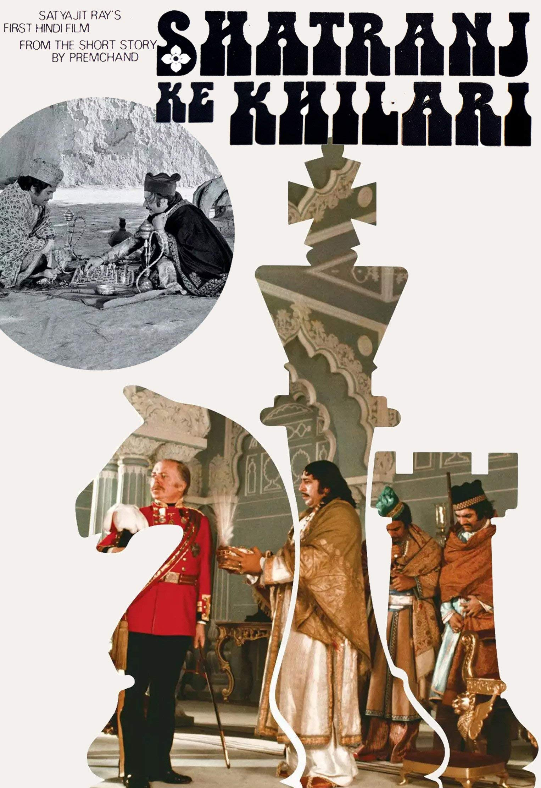
Joi Baba Felunath (1979)
Feluda investigates the theft of a priceless idol in Varanasi, facing a dangerous adversary.
Actors: Soumitra Chatterjee, Santosh Dutta, Utpal Dutt.
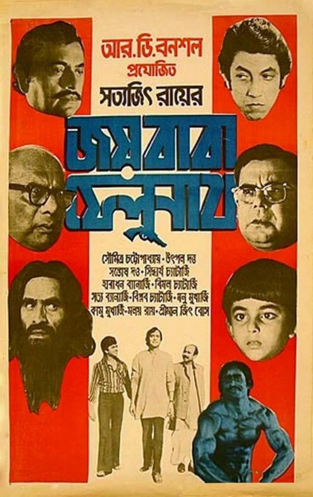
Hirak Rajar Deshe (Kingdom of Diamonds, 1980)
A satirical musical where two musicians confront a tyrant king who brainwashes his subjects.
Actors: Soumitra Chatterjee, Santosh Dutta, Tapen Chatterjee, Rabi Ghosh.
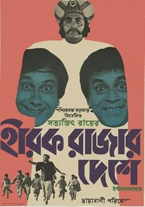
Ghare-Baire (The Home and the World, 1984)
A love triangle set against the backdrop of Bengal’s Swadeshi movement.
Actors: Soumitra Chatterjee, Swatilekha Sengupta, Victor Banerjee.
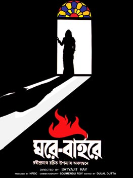
Ganashatru (An Enemy of the People, 1989)
A doctor exposes contaminated temple water but faces hostility from townspeople who refuse to accept the truth.
Actors: Soumitra Chatterjee, Ruma Guha Thakurta.
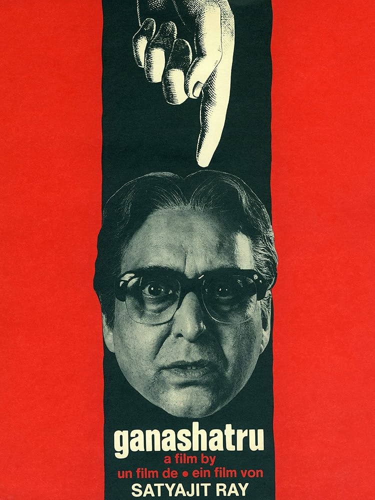
Shakha Proshakha (Branches of the Tree, 1990)
A family drama where a patriarch confronts the corruption and moral decay of his sons.
Actors: Soumitra Chatterjee, Ranjit Mallick, Monu Mukherjee.
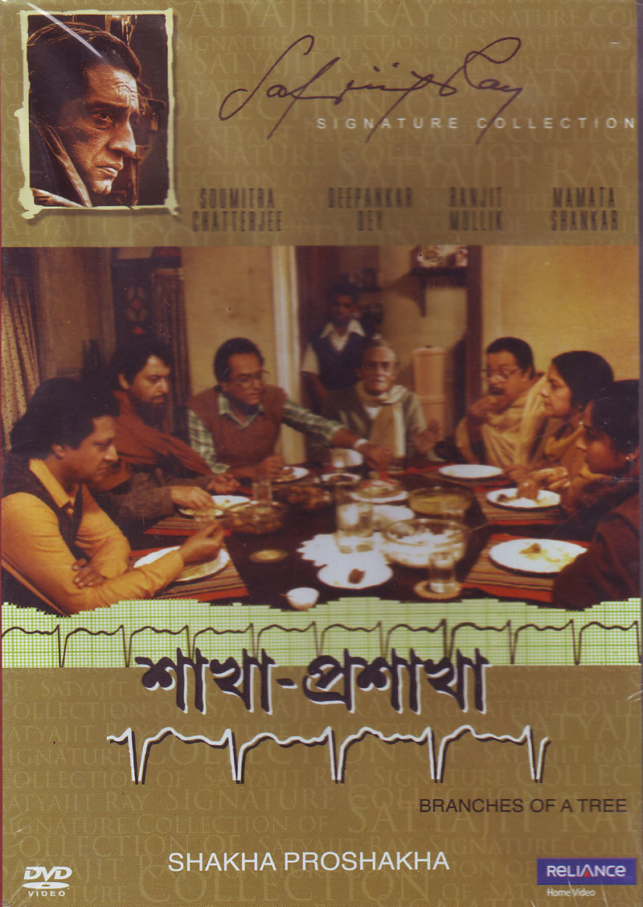
Agantuk (The Stranger, 1991)
Ray’s final film, exploring themes of trust, identity, and modernity when a mysterious relative visits a family.
Actors: Utpal Dutt, Mamata Shankar, Deepankar De.
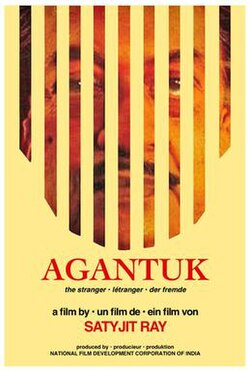